Anglais professionnel : Hygiène, alimentation, services (HAS)
Champ professionnel HAS. Seize mots anglais du métier, outils, objets et gestes de tous les jours. Ressource en libre accès.
Quatre étapes : du français à l'anglais, écouter et choisir, associer, compléter une phrase au travail. Le bouton « Écouter » lit le mot en anglais britannique.
Liste de vocabulaire
| Image | Français | English | Audio |
|---|---|---|---|
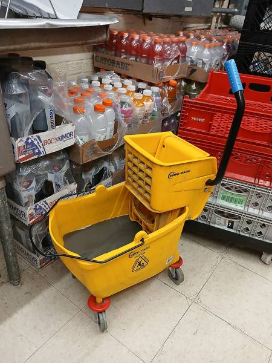 | le balai à franges | mop | |
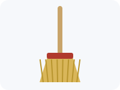 | le balai | broom | |
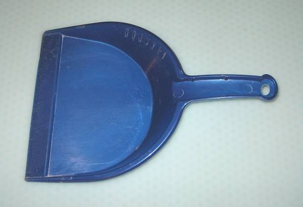 | la pelle à poussière | dustpan | |
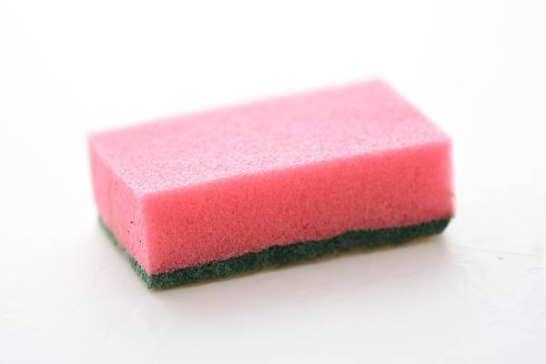 | l'éponge | sponge | |
 | le seau | bucket | |
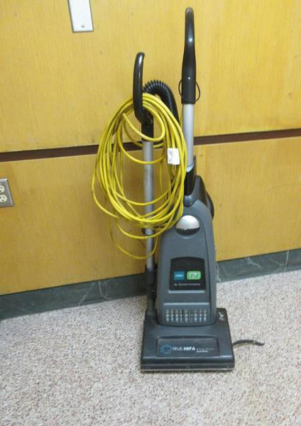 | l'aspirateur | vacuum cleaner | |
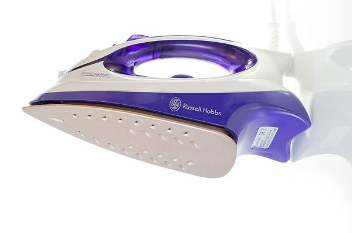 | le fer à repasser | iron | |
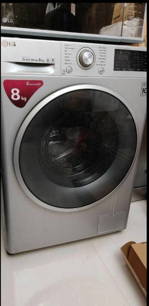 | le lave-linge | washing machine | |
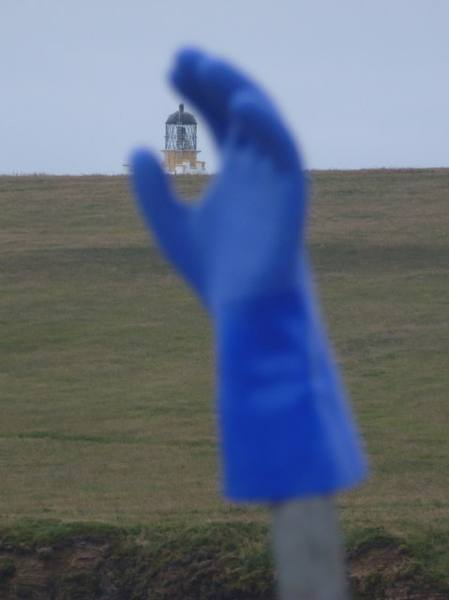 | les gants | gloves | |
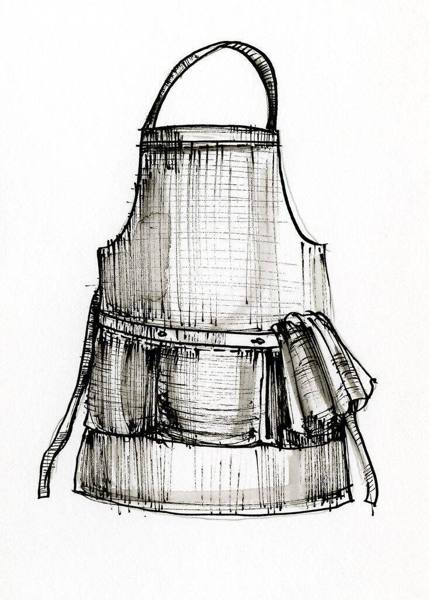 | le tablier | apron | |
 | la planche à découper | chopping board | |
 | la casserole | saucepan | |
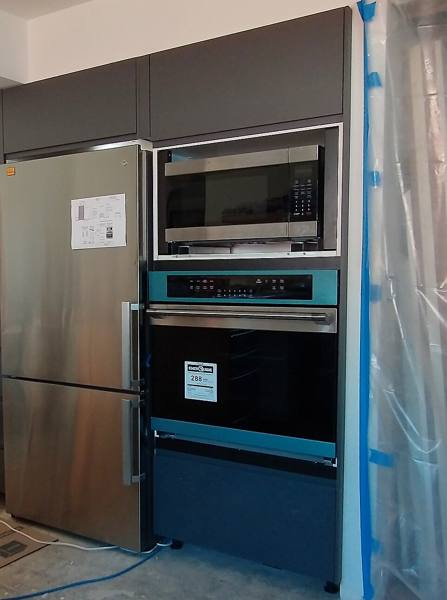 | le four | oven | |
 | le réfrigérateur | fridge | |
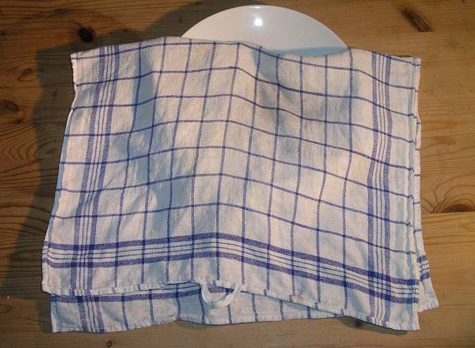 | le torchon | tea towel | |
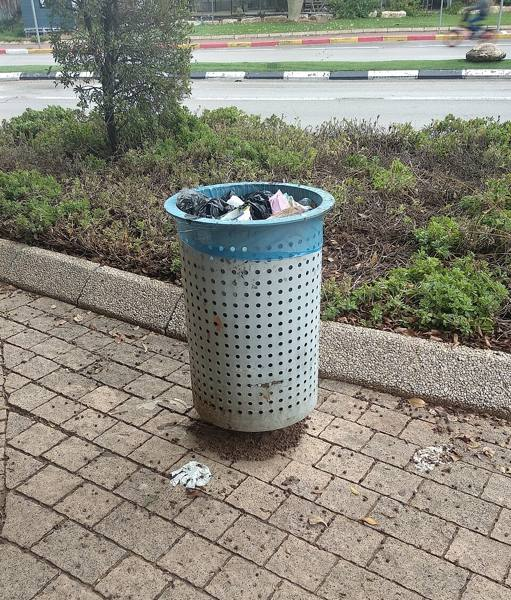 | la poubelle | bin |
Corrigé pour le professeur : phrases au travail
- Put your ________ on before you cook. (apron)
- Cut the carrots on the ________. (chopping board)
- Keep the milk in the ________. (fridge)
- Clean the floor with the ________. (mop)
- Put the rubbish in the ________. (bin)
- Dry the plates with a ________. (tea towel)
Dans les étapes 1, 2 et 3, la bonne réponse correspond à la ligne de la liste de vocabulaire.
Crédits des images
Photos sous licence libre, issues de Wikimedia Commons, redimensionnées pour le téléphone. Dessins originaux pour les gestes et les notions.
- le balai à franges (mop) : photo de Ser Amantio di Nicolao, licence CC BY-SA 4.0, page du fichier sur Wikimedia Commons.
- le balai (broom) : dessin original, Itinéraires et destinations, CC BY-NC-SA 4.0.
- la pelle à poussière (dustpan) : photo de Maksim, licence CC BY-SA 3.0, page du fichier sur Wikimedia Commons.
- l'éponge (sponge) : photo de Jonatan Svensson Glad, licence CC BY-SA 4.0, page du fichier sur Wikimedia Commons.
- le seau (bucket) : photo de MarlonBSB, licence Public domain, page du fichier sur Wikimedia Commons.
- l'aspirateur (vacuum cleaner) : photo de Infrogmation, licence CC BY 4.0, page du fichier sur Wikimedia Commons.
- le fer à repasser (iron) : photo de Colin, licence CC BY-SA 3.0, page du fichier sur Wikimedia Commons.
- le lave-linge (washing machine) : photo de washing, licence CC BY-SA 4.0, page du fichier sur Wikimedia Commons.
- les gants (gloves) : photo de Chris Downer, licence CC BY-SA 2.0, page du fichier sur Wikimedia Commons.
- le tablier (apron) : photo de David Ring, licence CC0, page du fichier sur Wikimedia Commons.
- la planche à découper (chopping board) : photo de Donovan Govan., licence CC BY-SA 3.0, page du fichier sur Wikimedia Commons.
- la casserole (saucepan) : photo de Cooks & Kitchens from Darlington, UK, licence CC BY 2.0, page du fichier sur Wikimedia Commons.
- le four (oven) : photo de Stilfehler, licence CC BY-SA 4.0, page du fichier sur Wikimedia Commons.
- le réfrigérateur (fridge) : photo de W.carter, licence CC BY-SA 4.0, page du fichier sur Wikimedia Commons.
- le torchon (tea towel) : photo de Nillerdk, licence Public domain, page du fichier sur Wikimedia Commons.
- la poubelle (bin) : photo de דוד שי, licence CC BY-SA 4.0, page du fichier sur Wikimedia Commons.
Fiche de vocabulaire à imprimer
Gros caractères (16 points minimum), en trois formats :